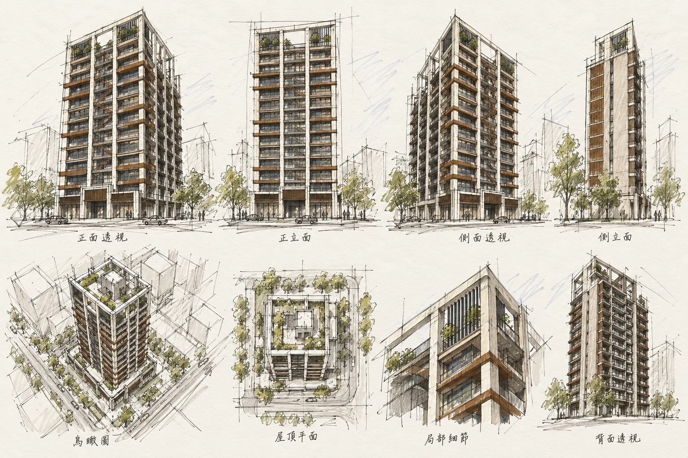

首頁 ／ 雙城街都更案
PROJECT / URBAN RENEWAL
雙城街都更案
臨公園、市場、夜市，

PROJECT PROFILE / 個案資料
雙城街都更案
預估總銷售額
48億
- 整合開發
- 元捷建設股份有限公司
- 實施者
- 三豐建設股份有限公司
- 建築設計
- 久太聯合建築師事務所 周泰良建築師
- 都更顧問
- 大展資產顧問股份有限公司
- 基地面積
- 332坪
- 使用分區
- 第四種商業區
- 規劃戶數
- 125戶
- 建築樓層
- 地上15層 地下5層
- 建築結構
- RC結構
- 實施方式
- 申請都市更新獎勵 + 防災型都更獎勵
LIVING / PROJECT HIGHLIGHTS
個案特色
- 臨公園、市場、夜市，
- 鄰近小學、捷運，生活機能第一優
- 上櫃公司地主有保障
- 限高條件下儘量創高樓層數
- 有限基地條件創新坡道平面停車位
ARCHITECTURAL STUDY
建築外觀與空間構想

建案規模、預估總銷、獎勵及規劃內容依個案資料整理，實際以核定圖說及相關文件為準。
← 返回進行中個案（都更）